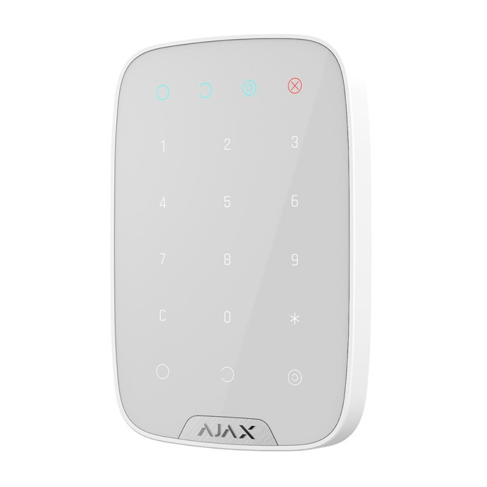

Бездротова сенсорна клавіатура Ajax KeyPad White


❮
❯
Бездротова сенсорна клавіатура Ajax KeyPad Jeweller призначена для керування режимами охорони системи Ajax без використання мобільного додатку. Пристрій дозволяє ставити та знімати систему з охорони за допомогою персональних кодів доступу, підтримує до 200 користувачів, має функціональну кнопку для активації тривоги або глушіння пожежних сирен, а також сповіщає про стан системи за допомогою світлодіодної індикації. KeyPad захищений від добирання коду блокуванням після трьох невдалих спроб та підтримує коди примусу для відправлення прихованої тривоги.
Основні характеристики:
Основні характеристики:
- Бездротова сенсорна клавіатура з ємнісним типом сенсора
- До 200 персональних кодів доступу (по одному для кожного користувача)
- 1 загальний код доступу для клавіатури
- До 200 персональних кодів примусу для прихованої тривоги
- До 99 кодів для незареєстрованих користувачів
- Функціональна кнопка (тривога / глушіння пожежних сирен / вимкнена)
- Світлодіодна індикація режиму охорони та несправностей
- Керування охороною груп приміщень
- Захист від добирання коду (блокування на 3-180 хвилин)
- Дальність зв'язку з хабом до 1700 м
- Автономна робота до 2 років від 4 батарей AAA
- Дистанційне налаштування через застосунок Ajax
- До 200 персональних кодів доступу (залежить від моделі хаба)
- По одному персональному коду для кожного користувача системи
- 1 загальний код доступу для клавіатури KeyPad
- Кожен користувач може мати свій унікальний код
- Можливість відстеження хто ставив/знімав систему з охорони
- Налаштування кодів через застосунок Ajax
- До 200 персональних кодів примусу (залежить від моделі хаба)
- По одному персональному коду примусу для кожного користувача
- 1 загальний код примусу для клавіатури KeyPad
- При введенні коду примусу система знімається з охорони без тривоги
- Автоматично відправляється прихована тривога на пульт охорони та власнику
- Зловмисник не дізнається що була відправлена тривога
- Захист при примусі вводити код під загрозою
- До 99 персональних кодів для осіб, які не зареєстровані в системі Ajax
- Кількість залежить від моделі хаба
- Можна видати тимчасовий доступ для прибиральників, ремонтників, гостей
- Відстеження використання кодів незареєстрованих користувачів
- Можливість видалення або зміни кодів у будь-який час
- Можливість керування охороною окремих груп приміщень
- Для керування групою введіть загальний код клавіатури + ідентифікатор групи
- Зручно для багаторівневих систем охорони
- Часткова постановка на охорону окремих зон
- Ідеально для офісів з кількома приміщеннями
- Працює в одному з трьох режимів (налаштовується)
- Режим "Тривога": надсилає тривогу на пульт охорони та користувачам, активує сирени
- Режим "Глушіння пожежної тривоги": вимикає сирени пожежних датчиків Ajax
- Режим "Без дії": кнопка вимкнена
- Вибір режиму через застосунок Ajax (PRO або адміністратор)
- Швидкий доступ до функції без введення коду
- Світлодіодна індикація режиму охорони
- Сповіщення про проблеми з датчиками
- Індикація втрати зв'язку з хабом
- Візуальне підтвердження введення коду
- Сповіщення про низький заряд батареї
- Індикація блокування після невдалих спроб
- Різні кольори та сигнали для різних станів
- Ємнісний сенсор для сенсорного керування
- Точне реагування на дотик
- Зручне введення коду
- Довговічність (немає механічних кнопок)
- Сучасний мінімалістичний дизайн
- Тип B — Пристрій доступу з керуванням
- Відповідає стандартам для систем контролю доступу
- Підтримка функцій постановки/зняття з охорони
- Можливість керування різними режимами
- Пропрієтарна бездротова технологія Ajax для передавання команд, тривог та подій
- Дальність радіосигналу: до 1700 м (між пристроєм і хабом або ретранслятором за відсутності перешкод)
- Двосторонній зв'язок з хабом
- Блокове шифрування з плаваючим ключем
- Передовий захист від саботажу
- Миттєві сповіщення про події
- Дистанційне налаштування у застосунках Ajax
- Радіочастотний гопінг для запобігання радіозавадам і глушінню
- Діапазони радіочастот: 866,0–866,5 МГц, 868,0–868,6 МГц, 868,7–869,2 МГц, 905,0–926,5 МГц, 915,85–926,5 МГц, 921,0–922,0 МГц (залежить від регіону)
- Максимальна ефективна випромінювана потужність (ERP): до 20 мВт
- Автоматичне регулювання потужності для зниження енергоспоживання та радіозавад
- Модуляція радіосигналу: GFSK
- Захист від добирання коду: KeyPad блокується після трьох невдалих спроб введення коду поспіль протягом однієї хвилини
- Час блокування: від 3 до 180 хвилин (налаштовується PRO або адміністратором)
- Тривога тампера при спробі відірвати клавіатуру від поверхні або зняти з кріплення
- Захист від підміни — автентифікація пристрою
- Виявлення втрати зв'язку від 36 секунд (залежить від налаштувань Jeweller або Jeweller/Fibra)
- Блокове шифрування передачі даних
- Радіочастотний гопінг проти завад та глушіння
- Батареї: 4 × AAA тип C (попередньо встановлені)
- Розрахунковий строк роботи від батарей: до 2 років
- Діапазон робочої напруги: 1,9–3,3 В⎓
- Номінальна робоча напруга: 3 В⎓
- Споживання струму в стані спокою за номінальної напруги: 86,5 мкА
- Максимальний струм споживання за номінальної напруги: 225 мА
- Повна ємність батареї: 2000 мА·год
- Напруга низького заряду батареї: 2,15 В⎓
- Напруга відновлення низького заряду: 2,6 В⎓
- Напруга відпрацьованої батареї: 1,9 В⎓ (пристрій вимикається)
- Ємність відпрацьованої батареї: 150 мА·год
- Виробник батареї: Huiderui
- Розміри: 150 × 103 × 14 мм
- Вага: 197 г
- Діапазон робочих температур: від −10°C до +40°C
- Допустима вологість: до 75%
- Кольори: чорний, білий
- Пристрій призначений лише для встановлення в приміщенні
- Тонкий елегантний дизайн (товщина 14 мм)
- Сенсорна поверхня з гладкого пластику
- Встановлюйте біля входу в приміщення для зручного доступу
- Розташовуйте на висоті 1,2–1,5 м від підлоги
- Забезпечте достатнє освітлення для зручності введення коду
- Уникайте встановлення поруч з металевими конструкціями (може погіршити зв'язок)
- Не встановлюйте під прямими сонячними променями (можливе нагрівання)
- Забезпечте можливість приховати введення коду від сторонніх осіб
- Пристрій призначений лише для встановлення в приміщенні
- Можна встановити кілька клавіатур у різних частинах об'єкта
- Житлові приміщення (квартири, будинки)
- Офіси та комерційні приміщення
- Магазини та торгові точки
- Банки та фінансові установи
- Складські приміщення
- Навчальні заклади
- Медичні установи
- Готелі та хостели
- Виробничі приміщення
- Паркінги та гаражі
- ✅ До 200 персональних кодів доступу
- ✅ Коди примусу для прихованої тривоги
- ✅ Захист від добирання коду (автоблокування)
- ✅ Функціональна кнопка тривоги або глушіння пожежних сирен
- ✅ Світлодіодна індикація стану системи
- ✅ Керування охороною груп приміщень
- ✅ Коди для незареєстрованих користувачів
- ✅ Дальність зв'язку до 1700 м
- ✅ До 2 років автономної роботи
- ✅ Ємнісний сенсор — довговічність
- ✅ Елегантний тонкий дизайн (14 мм)
- ✅ Дистанційне налаштування через застосунок
- Створення та редагування кодів доступу для користувачів
- Налаштування кодів примусу
- Створення кодів для незареєстрованих користувачів
- Вибір режиму функціональної кнопки (тривога / глушіння / вимкнена)
- Налаштування часу блокування після невдалих спроб (3-180 хвилин)
- Налаштування індикації подій
- Моніторинг заряду батарей
- Перевірка рівня сигналу Jeweller
- Перегляд історії подій (хто і коли ставив/знімав систему)
- Призначення клавіатури для керування певними групами
- Постановка та зняття системи з охорони без мобільного додатку
- Контроль доступу співробітників офісу (кожен має свій код)
- Видача тимчасових кодів для прибиральників або ремонтників
- Використання коду примусу при загрозі з боку зловмисника
- Швидка активація тривоги через функціональну кнопку
- Вимкнення пожежних сирен при помилковому спрацюванні
- Часткова охорона (керування окремими групами приміщень)
- Відстеження активності користувачів через історію подій
- Автоматичне блокування після 3 невдалих спроб протягом 1 хвилини
- Час блокування налаштовується: 3, 5, 10, 30, 60, 120 або 180 хвилин
- Під час блокування KeyPad не приймає жодних кодів
- Світлодіодна індикація блокування
- Сповіщення власника про спробу добирання коду
- Історія невдалих спроб у застосунку Ajax
- Захист від методів брутфорс-атаки
- Відрізняються від звичайних кодів доступу
- При введенні система знімається з охорони як звичайно
- Зловмисник не помітить різниці
- Автоматично відправляється тиха тривога на пульт охорони
- Власник отримує сповіщення про використання коду примусу
- Можна налаштувати для кожного користувача
- Захист при загрозі життю або примусі
- Фіксований монтаж замість носіння з собою
- Підтримка до 200 користувачів (SpaceControl — індивідуальний)
- Введення PIN-коду замість натискання кнопки
- Захист від добирання коду
- Коди примусу для прихованої тривоги
- Функціональна кнопка тривоги
- Світлодіодна індикація стану системи
- Керування групами приміщень
- Журнал всіх дій з KeyPad зберігається у застосунку Ajax
- Відстеження хто і коли ставив/знімав систему з охорони
- Фіксація використання кодів примусу
- Реєстрація невдалих спроб введення коду
- Контроль доступу співробітників
- Можливість експорту історії подій
- KeyPad Jeweller
- Кріпильна панель SmartBracket
- 4 батареї AAA (попередньо встановлені)
- Монтажний комплект
- Коротка інструкція
- Працює з усіма хабами Ajax (Hub, Hub 2, Hub Plus, Hub Hybrid)
- Підтримка ретрансляторів сигналу (ReX, ReX 2)
- Інтеграція з застосунками Ajax (iOS, Android, macOS, Windows)
- Підключення до пультів централізованого спостереження (ПЦС)
- Підтримка професійного режиму для інсталяторів (PRO)
- Сумісність з усіма пристроями Ajax
- Зручне керування системою без мобільного додатку
- Підтримка великої кількості користувачів (до 200)
- Високий рівень безпеки (коди примусу, захист від добирання)
- Гнучкі налаштування через застосунок
- Контроль доступу з історією подій
- Функціональна кнопка для швидкої тривоги
- Тривалий термін роботи від батарей
- Елегантний дизайн для будь-якого інтер'єру
3050.00 грн